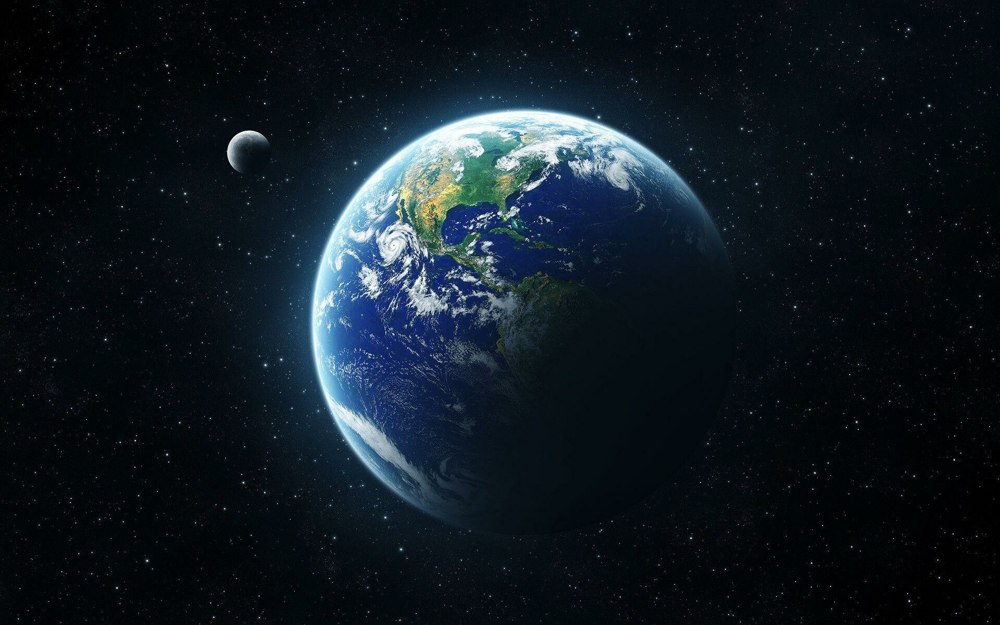

A Föld a Naptól számított harmadik bolygó a Naprendszerben, ahol a legnagyobb átmérőjű, tömegű és sűrűségű Föld-típusú bolygó.
Több millió faj, köztük az ember élőhelye is. A Föld a világegyetem egyetlen olyan bolygója, amelyről tudjuk, hogy életet hordoz. Jelenlegi ismereteink szerint 4,44–4,54 milliárd éve alakult ki, és a felszínén mintegy egy milliárd év múlva az élet is megjelent. Azóta a bioszféra jelentősen megváltoztatta az atmoszférát, és más, biotikus összetevőit. A Naprendszer külső körülményei a várakozások szerint még mintegy 1,5 milliárd évig támogatják az élet jelenlétét, de ezután a mind fényesebbé váló Nap el fogja tüntetni a bioszférát.
| Naptávolság | 152 097 701 km |
| Egyenlítői sugár | 6378,137 km |
| Térfogat | 1,0832073·1012 km³ |
| Tömeg | 5,9736·1024 kg |
| Gravitácoó | 9,8 m/s² |
A Hold a Föld egyetlen holdja, a Naprendszer egyik óriásholdja. A Földtől mért átlagos távolsága 384 402 kilométer, ami nagyjából a Föld átmérőjének 30-szorosa. Átmérője 3476 kilométer, ami hozzávetőleg negyede a Földének. Ezzel a Hold a Naprendszer ötödik legnagyobb holdja.